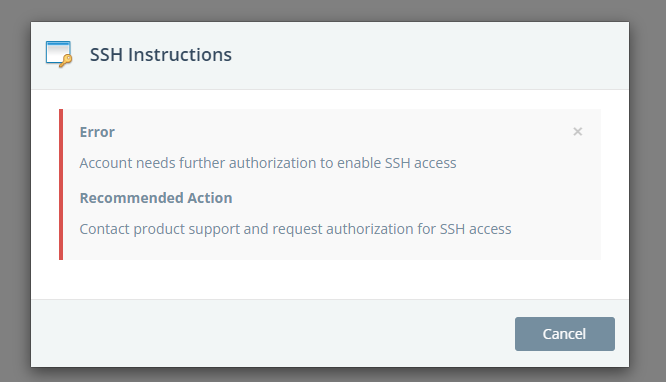

Pwning PaaS Cloud Managed Services From Breaking Isolation to Identifying Abuse
Introduction
This research is heavily inspired by the insightful work published by the team at Wiz (https://www.wiz.io/blog/the-cloud-has-an-isolation-problem-postgresql-vulnerabilities). Motivated by their findings, I conducted an independent assessment focused on Platform-as-a-Service (PaaS) environments—specifically targeting platforms that offer managed services in two primary categories:
- Coding Platforms
- Managed Service Platforms
Each provider implements its own approach to tenant isolation and access control. Some rely on logical isolation mechanisms such as fine-grained roles and permissions, while others enforce separation through dedicated virtual machines or container-level boundaries. While these design decisions often stem from considerations like cost, scalability, and architectural complexity, they also introduce varying degrees of exposure—particularly when trial or unauthenticated access is allowed.
Malicious actors can easily register for trial accounts and exploit these platforms for abuse or profit elevating the compute usage. This research highlights several such abuse scenarios, demonstrating how insufficient or misconfigured isolation can lead to unintended access across tenant boundaries.
Some of the issues identified are intrinsic to the platform’s design and known to the respective vendors. To avoid irresponsible disclosure or enabling abuse, specific vendor names and platform details are intentionally omitted.
Note
All testing was performed strictly within trial environments—typically provisioned without any payment information. In certain cases, the services required no registration at all, allowing for immediate access to managed compute or runtime environments.
Information Disclosure
I registered for a trial account with a cloud provider offering a shared PostgreSQL database service, where multiple tenants operate within the same PostgreSQL cluster instance.
Upon connecting to the database, I queried the currently authenticated user using the standard SQL command:
This value corresponded both to my database username and to the default database schema allocated for my account—an indicator of how user-specific isolation was implemented.
In shared PostgreSQL environments, one of the common metadata sources is the pg_stat_activity view, which exposes information about all active sessions on the cluster. By running the following query:
I was able to retrieve a snapshot of other active database sessions, including usernames, database names and query activities. This confirmed that multiple user accounts were co-located within the same PostgreSQL backend, lacking strong tenant isolation.

Such exposure allows an attacker to enumerate other tenant usernames and analyze active session metadata. From here, one could potentially perform online brute-force attacks using dictionary-based password attempts, especially if login rate limiting or anomaly detection is not enforced at the PostgreSQL layer or via a reverse proxy. Furthermore, metadata leakage through pg_stat_activity can also aid in identifying long-running queries, idle sessions, or behavioral patterns—useful for staging more targeted attacks or lateral exploration.
This finding highlights a confidentiality gap in multi-tenant managed database services: insufficient logical isolation at the PostgreSQL engine level, especially when default visibility settings are not restricted per tenant.
Lack of User Data Isolation
In some shared service environments, user-specific data—such as session information, temporary credentials, or runtime artifacts—is improperly stored in globally accessible directories like /tmp. While more security-conscious systems implement strict restricted directory listing, many shared environments overlook these configurations.
By leveraging command injection vulnerabilities within the application layer, it becomes possible to enumerate filesystem contents—particularly within writable or commonly used directories like /tmp. During one such enumeration, I identified a sessions/ subdirectory that appeared to store users data inside unique sub directories having names equivalent to their session id values. For example, if I have a session a0b1c2d4 then a directory will be created as /tmp/sessions/a0b1c2d4

Analyzing these session directories provided valuable insights, including:
- Active usernames or user IDs
- Shell history or executed commands (in some cases)
- User created data
In one specific instance, I discovered that another tenant on the platform was attempting a local privilege escalation. While I dont know the real intension, their session data included LinPEAS, a popular post-exploitation enumeration script, commonly used to identify privilege escalation vectors on Linux systems:
This kind of visibility into co-tenant activities represents a serious breach of isolation and confidentiality. It exposes not only behavioral patterns but also potentially sensitive operational data, turning shared environments into a passive reconnaissance surface for malicious users.
Command Execution
Bypassing Restricted Commands
In certain environments, basic hardening measures were implemented to restrict direct shell access. Specifically, execution of system-level commands (e.g., via exec, os.system, or backticks) was restricted to privileged users or sandboxed entirely. However, these restrictions often focused on blocking shell-level invocation rather than addressing broader code execution pathways.
To circumvent these controls, I leveraged the built-in Python libraries, which are often available in linux environments. Instead of invoking a shell with:
—which would typically result in a permission denied error or be blocked outright—I transitioned to using Python's native requests module to achieve the same effect programmatically:
This bypass technique avoids spawning a shell entirely, making it more compatible with sandboxed environments that only restrict shell execution but still permit outbound HTTP requests through high-level libraries. We can also use this technique to read and write files.
Remote Command Execution
In one particular case, the target application provided a trial account to new users without requiring any payment or credit card verification during registration. Upon successful account creation, the UI indicated that the provisioned user was granted super admin privileges.
While exploring the web interface, a section labeled "SSH Access" was available. However, clicking on this tab returned a message stating that SSH access was not permitted for the current account, suggesting that remote shell access was disabled at the UI level.

Despite the lack of SSH access, I was able to get to execute system commands and get reverse shell on the machine. The platform provided a set of credentials for a PostgreSQL database instance, accessible directly from the user's local machine using the psql client. The connection was established via a URI in the following format:
Once connected, I confirmed the version and underlying OS using:
PostgreSQL 14.4 on x86_64-pc-linux-gnu, compiled by gcc (GCC) 4.8.5 20150623 (Red Hat 4.8.5-44), 64-bit
As users are provided with super admin privileges, I proceeded to test functions typically restricted to high-privileged roles (e.g., users with the pg_read_server_files role). One such function is pg_ls_dir, which allows directory listing on the server:
The function successfully returned the contents of the root directory (/), confirming that the database user had elevated privileges on the underlying host OS.
To further validate the level of access, I tested for arbitrary command execution using PostgreSQL’s COPY TO PROGRAM feature. This function allows writing the output of a SQL query directly into a shell command, effectively enabling command injection from within the database context:
This confirmed that not only could the user list directories on the host system, but they also had the ability to execute arbitrary system-level commands via PostgreSQL. The combination of trial account access, lack of verification, and unrestricted use of administrative SQL functions represents a serious privilege escalation vector and highlights a misconfiguration in the database isolation model.
Reverse Shell
With confirmed command execution on the remote host via PostgreSQL's COPY TO PROGRAM, the logical next step was to attempt a reverse shell to gain interactive access.


After obtaining shell access, the next logical step would typically involve privilege escalation—attempting to elevate from the postgres system user to root. While I explored a few common vectors (e.g., SUID binaries, writable system paths, misconfigured sudoers), I did not pursue this further.
Exploiting PGAdmin4 Console
pgAdmin 4 is a web-based PostgreSQL administration and management tool that provides a GUI for interacting with PostgreSQL instances. Among its many features, pgAdmin 4 includes a built-in PSQL terminal, which allows users to execute raw SQL queries directly against the connected database.
When deployed as a web application, pgAdmin 4 is typically hosted on a remote server and exposed through a browser-based interface. Some cloud service providers or vendors offer managed pgAdmin 4 environments, enabling users to monitor and manage PostgreSQL databases remotely via the web console.
A lesser-known feature of the PSQL terminal in pgAdmin 4 is the ability to execute arbitrary shell commands on the underlying host system using the ! meta-command. For example:
These commands are executed directly on the server where pgAdmin 4 is hosted—not on the database server itself unless both are co-located. This provides a pathway to Remote Code Execution (RCE) if users are improperly granted access to pgAdmin 4 with insufficient isolation or access controls.
Given the ability to execute shell commands, it's also possible to establish a reverse shell from the host to an external machine under the attacker's control. This level of access highlights a critical risk in multi-tenant or shared environments where administrative interfaces like pgAdmin 4 are exposed without proper role-based access control or sandboxing. Once RCE is achieved via the ! command, the attacker effectively gains an entry point for further post-exploitation activities.
SSRF
AWS
After achieving Remote Code Execution (RCE) on the target host, the next step was to determine whether the compromised environment had access to cloud instance metadata services—specifically the AWS EC2 Instance Metadata Service (IMDS).
Using standard tools like curl, I was able to successfully query the metadata endpoint from within the compromised environment:
While no IAM role was explicitly listed under the usual /iam/security-credentials/ path—indicating that no IAM role was attached to the instance.
COPY poc FROM PROGRAM 'curl http://169.254.169.254/latest/meta-data/identity-credentials/ec2/security-credentials/ec2-instance';
SELECT * FROM poc;
While the credentials were successfully retrieved and valid, they had no actionable IAM permissions attached, effectively preventing further lateral movement or access to AWS services via the API. This is consistent with default-deny IAM policies or minimal-permission roles designed for EC2 telemetry or monitoring only.
Azure
When operating in a cloud environment, it’s common to check for instance metadata services to extract environmental details or credentials. While AWS uses the well-known http://169.254.169.254/latest/meta-data/ endpoint, this is not universal—different cloud providers expose metadata through different APIs and often with provider-specific headers or versioning requirements.
If querying the standard AWS metadata endpoint fails, it's worth checking for other cloud providers such as Azure, GCP, Oracle Cloud, or Alibaba Cloud. A comprehensive and actively maintained list of cloud metadata endpoints is available here:
For example, in a PostgreSQL environment where RCE has been achieved, the Azure metadata service can be queried as follows:
postgres=# CREATE TABLE poc(data TEXT);
postgres=# COPY poc FROM PROGRAM 'curl -H "Metadata:true" "http://169.254.169.254/metadata/instance?api-version=2021-12-13"';
postgres=# SELECT * FROM poc;
<TRUNCATED DATA> + ","path":"/home/azureuser/.ssh/authorized_keys"}], "publisher":"OpenLogic","resourceGroupName":"XXXX","resourceId":"/subscriptions/8ed21ef0-1d5b-4cea-b7ff-707fc51b65c4/resourceGroups/XXXXXX/providers/Microsoft.Compute/virtualMachines/SG-XXXXXX","securityProfile":{"encryptionAtHost":"false", "secureBootEnabled":"false","securityType":"","virtualTpmEnabled":"false"}, "sku":"7-CI","storageProfile":{"dataDisks":[{"bytesPerSecondThrottle":"","caching":"None","createOption":"Attach","diskCapacityBytes":"","diskSizeGB":"10","image":{"uri":""},"isSharedDisk " <TRUNCATED DATA>
Conclusions
Many cloud service vendors treat these architectural trade-offs as acceptable risks, prioritizing user convenience and frictionless onboarding—especially for trial or freemium-tier accounts. To streamline the developer experience, vendors often relax security boundaries in non-production tiers, which can inadvertently expose shared infrastructure to abuse.
Some vendors attempt to mitigate cross-tenant risks by employing virtual machine-level isolation for each user session or deployment. This approach reduces the attack surface associated with shared compute or database environments, albeit with increased operational cost.
However, when it comes to abuse of trial environments by malicious users—for example, for lateral movement, metadata extraction, or external pivoting—many vendors adopt a reactive posture. They typically rely on runtime behavioral monitoring, rate-limiting, and abuse detection rather than proactively sandboxing capabilities.
A few vendors do take precautionary measures by disabling privileged operations (e.g., superuser or administrative SQL functions) in trial accounts. This is a positive step toward reducing the blast radius of potential exploitation attempts and enforcing least privilege by default.